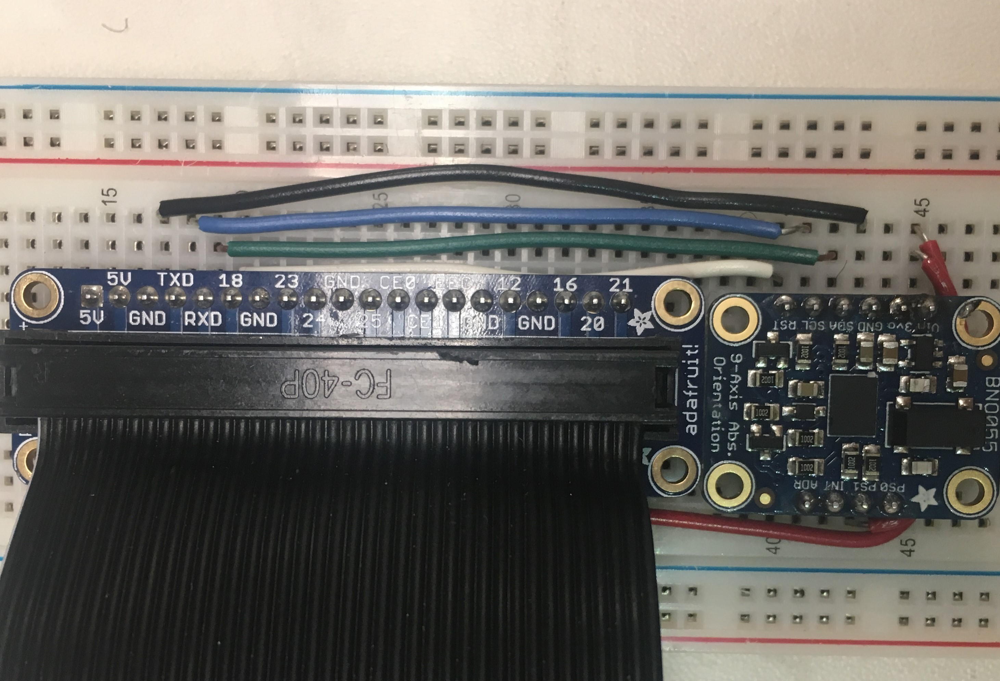
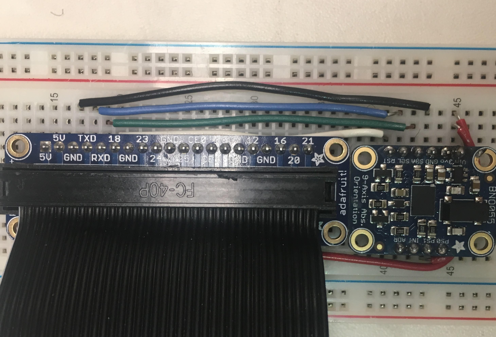
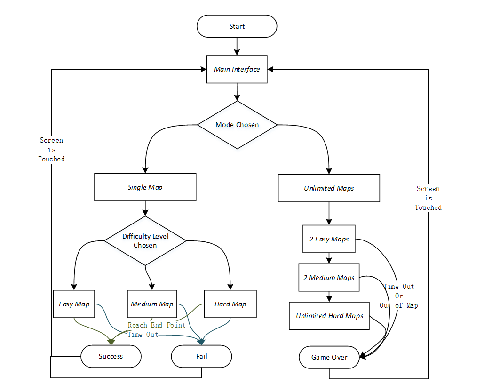

R lling Ball
lling Ball
ECE 5725 Final Project Report
By Qinya Zeng, Yunting Li.
Demonstration Video
Introduction
In this project, we create a game using Raspberry Pi. We use an absolute orientation sensor to develop the game and turn the sensor data from accelerometer and gyroscope into real time 3-dimensional orientation, so that user could control the game by body motion, a new way to interact with computer, instead of with traditional keyboard and mouse. In this design, we use pygame for game developing, and use piTFT as display interface of the game. In this game, users are going to move the ball from start point, which locates on one end of a randomly chosen map, to the end point, which locates on the other end. Game have different modes, with different level of difficulty and different time limits. For entertainment value, a background music will change according to the state of game.
Project Objective
Design a game that could using body motion to control. Have background music. With randomly chosen maps. Have a timer and limited times to conquer maps. When ball fall from map, game would restart using the same map or user would fail the game according to the different mode user choose. When ball reach end point, user would succeed the game or continue the game by immediately randomly choosing another map due to the mode user in.
Design and Testing
Hardware
The main challenge for hardware design is to connect, retrieve and adjust data from the orientation sensor. In order to avoid complicated I2C interface problem (for example, BNO055's use of I2C clock stretching will cause problems with a hardware I2C clock stretching bug in the R-Pi), we connect BNO055 using its serial UART mode according to the suggestion by Adafruit, manufacturer of BNO055. Then we need to disable the kernel's use of the Pi's serial port, because when the Pi kernel boots up, it will put a login terminal on the serial port, if we connect BNO055 to this serial port, it will get confused by the login terminal. Thus, we disable the kernel's use of the serial port by using the raspi-config tool, same operation as in Lab1. Then we reboot to enable the changes. Wires are connected as the figure below.
 

Fig.1 wiring sensor and R-Pi (by Adafruit) Fig.2 circuits of wiring sensor
We connect BNO055 Vin to R-Pi 3.3V power, BNO055 GND to R-Pi GND, BNO055 SDA to R-Pi RXD, BNO055 SCL to R-Pi TXD, BNO055 PS1 to BNO055 Vin. Then we need to find a GPIO pin on R-pi to connect to RST on the sensor. We choose GPIO18 because it is a general pin which doesn’t have other functions reserved by R-Pi thus would easier for us when using.
Software
In software design part, we introduce how we use serial UART to connect the absolute orientation sensor and how we design the Rolling Ball game through python pygame based on Raspberry Pi. We firstly get the absolute orientation from sensor BNO055. Based on the absolute orientation from sensor, we design 3 combinations between map and ball. The first is 1D rotating map with rolling ball, the second is 2D map with rolling ball, and the last one is 3D rotating map. The 2D map with rolling ball is our main application shown in the demo video. To increase the fun of the game, we design different modes in 2D map with rolling ball. In each mode, we add time limit to increase the excitement of the game. At last, we design the interface and music of the game to increase user experience. The main flow of 2D map with rolling ball is shown in fig 3.
Fig.3 Flow chart of 2D map with rolling ball
The implementation details of each part are introduced as follows.
1. Get Position from Sensor
In order to collect 3D orientation data from sensor, we need to have R-Pi configuration with serial UART and RST connected to a GPIO pin. Then we read three Euler angles (in degree) from sensor including heading, roll and pitch. The parameters we need are roll and pitch. we do not need heading because we cannot move a ball on a plan due to different heading of our map. So, we got all parameters needed for 3-dimensional control from the sensor. There are a few things need to pay attention to: the angle we retrieve from sensor is in degree, we need to convert it into radians using the formula: radian =π/180 degree, and our gamepad is designed to attach under the R-Pi and display reversely, so the pitch angle need to adjust since we initially have pitch=180 degree..
2. Map & Ball Drawing
2.1 1D Rotating Map with Rolling Ball
In 1D rotating map, the map is composed of lines and we use roll angle from BNO055 sensor to control the rotating attitude of the lines. The ball would scroll against the line based on the tilt angle. If the ball scrolls out of the line, it would fall down to the next line below the previous line. The example pictures are shown in fig 4.
To implement the 1D rotating map, we first draw the map, composed of lines, on the piTFT screen. The length of each line is fixed and the line rotates according to its center. If we want to specify a line, we need to confirm the start and end points of the line. The equation of start and end positions based on tilt angle are shown as follow
where (xs, ys) is the start point, (xe, ye)is the end point, (xc, yc)is the center point of the line, l is the length of the line, is the roll angle in radians.
Then we add the ball, loaded from a colorful ball image. The speed of the ball could be adjusted by the tilt angle. In order to make the ball seems to scroll against the line based on the tilt angle, we split the movements of the ball into two part, the x direction and y direction. The x direction is designed to track the tilt angle of the plane. If the tilt angle of the plane is positive, the ball rolls to +x direction. If the tilt angle of the plane is negative, the ball rolls to -x direction. The bias of the tilt angle based on the reference determines the speed of the ball in x direction. The y direction is designed to stick ball and line together. We continuously detect the y position of the ball named Ball_y and y position of the line based on the x position of the ball named Line_y. The distance between line and ball (i.e., Ball_y - Line_y) is asserted to be within the radius of the ball. If the distance is bigger than the radius of the ball, we move the ball downwards to stick to the line. If the distance is smaller than 0, we move the ball upwards to stick to the line. Beside, if the ball scrolls outside the x range of the line, we let it fall down to the next line.


Fig.4 An example of 1D rotating map with rolling ball
2.2 2D Map with Rolling Ball
In 2D Map with rolling ball, the map is stationary and the ball would scroll on the map. The direction of the ball is controlled by roll and pitch angle from sensor, where roll angle controls the x-axis direction and pitch angle controls the y-axis direction. The bias of the angle from 0 controls the speed of the ball. We designed the map with small white squares, where 16 squares * 12 squares is chosen in our implementation. There are two red squares on the map, where one is considered as start position and the other is considered as end position. The background of the game is black. Each time the game is started, the ball would be set in the start red squares. The user could use BNO055 sensor to control the ball scroll on the map. If the ball is out of the map, the ball would disappear and a “Game Over” interface would be shown on the screen. If the user control the ball to reach the end red square, the user conquered the map successfully. Considering the difficulty of maps, we created map sets with three levels of difficulty. They are easy maps, median maps and hard maps. Fig.5 is an example of easy map, fig.6 is an example of median map and fig.7 is an example of hard map.


Fig.5 Simple map Fig.6 medium map Fig.7 hard map
2.3 3D Rotating Map
In 3D rolling map, the map is composed of a plane and we use roll and pitch angle from BNO055 sensor to control the rotating attitude of the lines. Since the piTFT screen is 2D, we need to show a 3D rotation on a 2D screen. According to the perspective principle, the object far away from us is small and the object near us is big. Thus, the map is shown based on two directions of rotation, while roll angle represents the x direction and pitch angle represents the y direction. When the roll angle is positive, the right line of map diminishes and the left line enlarges. When the roll angle is negative, the right line of map enlarges and the left line enlarges. When the pitch angle is positive, the upper line of map diminishes and the low line enlarges. When the pitch angle is negative, the upper line of map enlarges and the low line diminishes. The example pictures are shown in fig.8.


Fig.8 An example of 3D rotating map
3. Modes & Time
We design two modes for the game 2D Map with Rolling Ball. Mode one is Single Map and mode two is Unlimited Map. We add limit time into both modes.
In Single Map Mode, user could choose the difficulty level of map (i.e., easy map, median map or difficult map). For example, if user decided to play median map, the system would randomly choose a map in the median map set for the user. If user controls the ball to reach the end point, the user successfully conquered the map and the time he/she used would be shown on the screen. If the user controls the ball to scroll out of the map, the ball would be reseted to the start red square. If user runs out of time, he/she fails the game. The time limit for sigal and median map is 60s, while the time limit for hard map is 90s.
In Unlimited Map Mode, user could play as much maps as he/she can. Each time user controls the ball to reach the end point of a map, a new map would appear and the ball would be reseted to the start point. In the first two maps, the system would randomly choose maps from easy map set. In the next two maps, the system would randomly choose maps from median map set. After the user conquered four maps, the system would randomly choose maps from hard map set for the following maps. Similarly as Single Map Mode, there is a time limit for each map. The time limit for sigal and median map is 60s, while the time limit for hard map is 90s.
4. Interface Design
We designed several interfaces to complete the game, add visual appreciation, and increase user experience. At the beginning of the game, a main interface would be shown on the screen (fig.9) for user to choose different modes of the game. After the user has chosen a mode, the interface with progress bar would be shown on the screen (fig.10) to load the map. After the user completes the game, whether fail the game or successfully conquered one map, the status interface would be shown on the screen (fig.11). When the user touch the status interface, the main interface would be shown again.


Fig.9 main interface Fig.10 loading bar Fig.11 status interface
5. Music
We added sounds to complete the game, add hearing enjoyment, and increase user experience. When the user is selecting the game modes, a relaxing music is playing. When the user is playing the game, an exciting music is playing. When the user successfully conquers the map, an exciting successful sound plays. When the user loses the game, a disappointing sound plays.
Conclusion
In this project, we have successfully create a game using Raspberry Pi. We use an absolute orientation sensor to develop the game and turn the sensor data into real time orientation, so that user could control the game by body motion, a new way to interact with computer, instead of with traditional keyboard and mouse. In this design, we use pygame for game development, and use piTFT as display interface of the game. During the design, we have changed our initial plan from developing 3D map into 2D in order to avoid bad gaming experience. When the plane rotation angle is too large, the objects on the plane will be blocked by the plane itself, thus affecting the user’s experience. We had designed and include all function that we intended for this 2D game and add some new functions during the development of the game. We add music and interface to improve user experince. Our project is finally completed successfully.
Future Work
Although we are pleased with our final achivement, improvements of our project are definitely exist. If we had more time on this project, we would focus on turing our 2D images into 3D, implement 3D plane drawing algorithm into map drawing, and we also need to figure out a way to solve the problem of too-much rotation angle leading to invisible of the ball. We would turn from randomly choosing maps to randomly generating maps. A big challenge of randomly generating maps would be to develope an algorithm to ensure the road that could always start and end from the same point and the road could extend continuously. Also, we could expanding the function of our game by adding a ranking list to increase the competitiveness of the game, and we could add some randomly appearing obstacles along the map.
Work Distribution

Project group picture
Yunting Li
yl2989@cornell.edu
Software design
Map and ball drawing
Modes and time design
Interface design
Music display.
Qinya Zeng
qz273@cornell.edu
Sensor detection
Software design
Map and ball drawing
Modes and time design
Interface design
Parts List
- A Raspberry pi (provided in lab)
- A piTFT screen (provided in lab)
- A BNO055 absolute orientation sensor ($34.95)
- A speaker (provided in lab)
- Breakout Cable (provided in lab)
- Breadboard and wires (provided in lab)
Total: $34.95
Acknowledgement
We would like to thank Professor Joe Skovira and TAs, who gave us good advice when we encountered difficulties, and are always available to help us, provide guidance and support throughout the semester